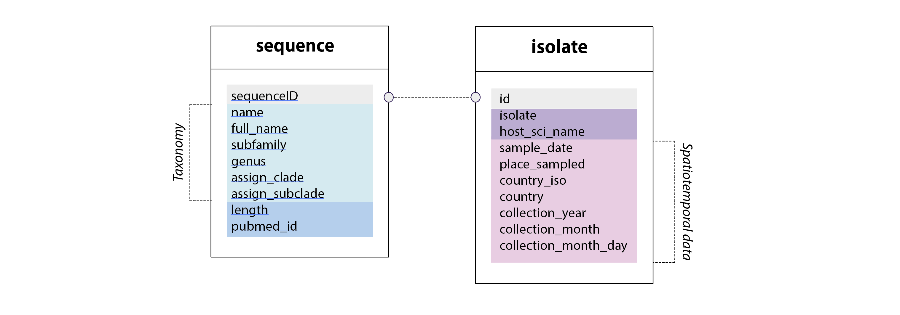

How to use Parvovirus-GLUE - an example-driven tutorial
This tutorial focuses on carnivore amdoparvovirus 1 - also known as Aleutian mink disease virus (AMDV). It comprises the following steps:
- Downloading selected sequences from GenBank.
- Extracting isolate data from GenBank files.
- Filtering sequence data to obtain a valid analysis set.
- Defining virus reference sequences and associating them with annotations.
- Constructing an alignment using a codon-aware method.
- Mapping feature coverage of sequence members within an alignment.
- Reconstructing annotated, midpoint-rooted phylogenetic trees.
- Using GLUE projects as a basis for collaborative research and resource development.
If you haven't decided yet whether or not you want to use GLUE, you might find it useful simply to look through this tutorial, as it should provide useful insight into the kind of things that can be done with GLUE projects.
If you've already committed to using GLUE, you may find it useful to also investigate the GLUE example project when attempting this tutorial.
Background 1: Carnivores, parvoviruses and the fur industry

Left to right: stoat/ermine (Mustela ermina); Leonardo da Vinci's 'Lady with an Ermine' (1489–1491); North American mink (Neovison vison); Women posing with mink furs in the 1930s;
Humans have established relatively close relationships with several carnivore species. But whereas some are kept as companion animals, others are hunted or farmed for meat or fur. In Europe, several mustelid species have historically been hunted for fur, including European mink (Mustela lutreola), ermine (Mustela ermina) and European polecat (Mustela putorius). However, the fur of the North American mink (Neovison vison) is considered superior in quality to all of these.
Furthermore, while records of efforts to breed ermine (stoats) in captivity exist, these ventures have apparently been short-lived. By contrast, North American mink are extensively farmed. The first mink farms were founded in the 1860s, in Upstate New York, and farming of American mink was introduced into Europe in the early 1930s. The breeding of various fur colour mutants led to a boom in the mink industry in the two decades that followed.
One unintended consequence of the post-war boom in mink farming was the introduction of American mink into Europe (as escaped animals took up residence in local habitats). American mink (hereafter referred to simply as ‘mink’) are now a relatively widespread invasive species in Europe.
In the 1930s a severe disease emerged in farmed mink. This disease was originally identified in the Aleutian mink breed and was consequently named Aleutian disease (AD). However, it was soon discovered to afflict American mink in general. AD is caused by an parvovirus in genus (Amdoparvovirus) called Aleutian mink disease virus (AMDV). This virus was originally considered a species in its own right, but has recently been reclassified as a sublineage of carnivore amdoparvovirus 1. AD is presently considered the most important infectious disease affecting farm-raised mink.
Background 2: AMDV-related parvoviruses in wild versus farmed carnivores
Infection with AMDV - or related amdoparvoviruses - is apparently widespread in wild mink as well as in farmed animals. In addition, related viruses have been identified in several other carnivore species, including gray foxes, skunks, raccoon dogs and red pandas. However, relatively little is known about the biology of amdoparvovirus infection in the natural environment, or the broader distribution of amdoparvovirus infections in wild species.

Most importantly, it is not clear whether the pathology of AD in captive mink is typical of disease that occurs in the wild, or if factors associated with fur farming somehow enabled the emergence of the disease.Left to right: gray fox (Urocyon cinereoargenteus); striped skunk (Mephitis mephitis); raccoon dog (Nyctereutes procyonoides); red panda (Ailurus fulgens);
Increased availability of molecular sequence data mean it might now be feasible to gain some insight into the natural history and evolution of amdoparvoviruses, and this in turn may shed light on the emergence of AD.
In this tutorial we will use the Parvovirus-GLUE project and published parvovirus sequence data to (i) investigate AMDV distribution diversity and evolution, and (ii) establish a sequence-based resource for AMDV.
1. Downloading all available AMDV sequences from GenBank
To download all AMDV entries in NCBI GenBank, we will use a customised version of GLUE's 'ncbiImporter' module. Our project-specific configuration of the module can be viewed here. Viewing the file, you can probably see that it is configured to download sequences based on a query phrase:
"Carnivore amdoparvovirus 1"[Organism] AND 200:2000[SLEN]
This 'eSearchTerm' is a standard NCBI entrez text query that specifies all GenBank entries labelled "beak and feather disease" in the 'Organism' field and between 200-5000 nucleotides (nt) in length.
To use the module, first initiate GLUE on the command line as follows:
MyComputer:Parvovirus-GLUE rob$ gluetools.sh
GLUE Version 1.1.103
Copyright (C) 2015-2020 The University of Glasgow
This program comes with ABSOLUTELY NO WARRANTY. This is free software, and you
are welcome to redistribute it under certain conditions. For details see
GNU Affero General Public License v3: http://www.gnu.org/licenses/
Mode path: /
GLUE>
Notice from the first line that I'm in the 'Parvovirus-GLUE' directory when
I initiate GLUE.
This means that, by default, it will be my 'working directory' - when I reference
a file from the GLUE console, I'll need to do so relative to this directory.
Next, navigate to the 'parvoviridae' project as shown here:
GLUE> project parvoviridae
OK
Mode path: /project/parvoviridae/
Now create the module using it's configuration file, which is contained in the Parvovirus-GLUE project, as shown here:
Mode path: /project/parvoviridae/
GLUE> create module -f modules/build/genus/amdo/amdoNcbiImporterExample.xml
OK
(1 Module created)
To run the module, execute the following command in the GLUE shell:
Mode path: /project/parvoviridae/
GLUE> module amdoNcbiImporterExample import
When I ran this command on the 2nd March 2022, I obtained the following output:
ncbiImporterSummaryResult
totalMatching: 1777
present: 0
surplus: 0
missing: 1777
deleted: 0
downloaded: 1777
Since the GenBank database is continually expanding, you may find
that you obtain more sequences than this when running the same
command at a later date. Note that next time the module is run, only
the missing sequences will be downloaded.
Now export the sequences to a 'source' directory as follows.
Mode path: /project/parvoviridae
GLUE> export source ncbi-curated-parvo-amdv -p sources/genus/amdo/
2. Importing AMDV sequences and metadata from GenBank files.
Now that we've downloaded a set of AMDV sequences, we can incorporate them into the Parvovirus-GLUE project. Load the sequences as follows:
Mode path: /project/parvoviridae
GLUE> import source sources/genus/amdo/ncbi-curated-amdv/
The next step is to incorporate additional, sequence related data. To do this it we need to consider the underlying schema of the database underlying Parvovirus-GLUE, which is defined in this file.

Parvovirus-GLUE schema extensions. All GLUE projects have a 'sequence' table. In Parvovirus-GLUE we've extended this table to capture taxonomic information as well as some other sequence-associated data fields. In addition, we've defined a separate 'isolate' table that is linked to the 'sequence' table via the 'sequenceID' field (always unique to every sequence). The isolate table contains information specific to the isolate that the sequence was obtained from - e.g. host species from which the isolate was obtained, isolate name, and spatiotemporal data associated with isolation.
All AMDV sequences have the same taxonomic information. This data can be entered on a sequence-by-sequence basis using GLUE commands, but to make the process more efficient, we can instead use a script.
Mode path: /project/parvoviridae
GLUE> run script glue/tutorial/exampleSetTaxonomicDataAmdv.js
Before we can import sequence-associated data to the isolate table we need to first create a link to that table for each sequence we have imported. This can be accomplished on a sequence-by-sequence basis using GLUE commands. Alternatively, to make the process more efficient, we can use a script.
The script is run as follows:
Mode path: /project/parvoviridae
GLUE> run script glue/tutorial/exampleLinkIsolateDataAmdv.js
An appropriately configured genbankPopulator module can now be used to extract sequence and isolate information from GenBank files. We can use this module to extract useful isolate-related information that is embedded in the "notes" section of the GenBank file.
Mode path: /project/cress
GLUE> module parvoGenbankXmlPopulator populate
We can now inspect the data in the isolate table via the command line, to see if it has been extracted as expected:
Mode path: /project/parvoviridae
GLUE> list sequence sequenceID isolate.isolate isolate.country -w "name = 'AMDV'"
+============+========+============================+===================================+
| sequenceID | length | isolate.host_sci_name | isolate.country |
+============+========+============================+===================================+
| AF205380 | 690 | Mustela lutreola | Spain |
| AF205381 | 687 | Neovison vison | Spain |
| AF205382 | 690 | Lutra lutra | Spain |
| EU652446 | 782 | Neovison vison | China |
| EU652447 | 782 | Neovison vison | China |
| EU652448 | 785 | Neovison vison | China |
| EU652449 | 785 | Neovison vison | China |
Note that a 'where clause' is used to limit the query to AMDV. Where clauses can be used in GLUE to control how data are selected, and can reference any data field represented in the underlying project database schema. The schema can be extended with new fields and tables as required.
3. Creating an alignment of all AMDV sequences.
To create an alignment, we need to first create a constrained alignment object as follows:
Mode path: /project/parvoviridae
GLUE> create alignment AL_AMDV -r REF_MASTER_Amdo_AMDV
OK
We can now specify which sequences belong to this constrained aignment object, as follows:
Mode path: /project/parvoviridae
GLUE> alignment AL_AMDV add member --whereClause "source.name = 'ncbi-curated-amdv'"
OK
Now we can construct the alignment. The Parvovirus-GLUE project contains a parvovirus-specific configuration file for GLUE's 'compoundAligner' module.
GLUE> compute alignment AL_AMDV parvoCompoundAligner
Now let's inspect the resulting alignment:
GLUE> alignment AL_AMDV show statistics
OK
GLUE> project parvoviridae alignment AL_AMDV show statistics
+======================+=====================+============================+=========================+==========+==========+=============+=============+
| sequence.source.name | sequence.sequenceID | referenceNtCoveragePercent | memberNtCoveragePercent | minRefNt | maxRefNt | minMemberNt | maxMemberNt |
+======================+=====================+============================+=========================+==========+==========+=============+=============+
| ncbi-curated-amdv | AB044558 | 7.6025827952509895 | 100.0 | 3043 | 3407 | 1 | 365 |
| ncbi-curated-amdv | AB044559 | 7.6025827952509895 | 100.0 | 3043 | 3407 | 1 | 365 |
| ncbi-curated-amdv | AF107626 | 6.998541970422829 | 100.0 | 587 | 922 | 1 | 336 |
| ncbi-curated-amdv | AF107627 | 6.998541970422829 | 100.0 | 587 | 922 | 1 | 336 |
| ncbi-curated-amdv | AF107628 | 6.998541970422829 | 100.0 | 587 | 922 | 1 | 336 |
| ncbi-curated-amdv | AF107629 | 6.998541970422829 | 100.0 | 587 | 922 | 1 | 336 |
| ncbi-curated-amdv | AF107630 | 6.998541970422829 | 100.0 | 587 | 922 | 1 | 336 |
| ncbi-curated-amdv | AF107631 | 6.998541970422829 | 100.0 | 587 | 922 | 1 | 336 |
| ncbi-curated-amdv | AF107632 | 6.998541970422829 | 100.0 | 587 | 922 | 1 | 336 |
(only the first few results are shown here)
Or alternatively, list alignment members, along with their associated data, like this:
GLUE> alignment AL_AMDV
OK
Mode path: /project/parvoviridae/alignment/AL_AMDV
GLUE> list member sequence.sequenceID sequence.name sequence.isolate.isolate
+=====================+===============+====================================+
| sequence.sequenceID | sequence.name | sequence.isolate.isolate |
+=====================+===============+====================================+
| AB182568 | AMDV | YCC-IN1P |
| AB182569 | AMDV | YCC-IN2P |
| AB182570 | AMDV | RRP-JP11P |
| AB182571 | AMDV | RRP-JP12P |
| AB182572 | AMDV | BTP-SA11P |
(only the first few results are shown here)
6. Mapping feature coverage in AMDV sequences.
Now that we have created an alignment of AMDV sequences that is constrained to the AMDV reference sequence, we can use this alignment in combination with GLUE's featurePresenceRecorder module to examine feature coverage within individual AMDV sequences.
Run the module as follows to generate feature coverage data for the alignment:
Mode path: /project/parvoviridae
GLUE> module parvoFeaturePresenceRecorder record feature-presence AL_AMDV -f whole_genome -d
+=======================+=============================+============================+===================================+=========================+=====================+
| member.alignment.name | member.sequence.source.name | member.sequence.sequenceID | featureLoc.referenceSequence.name | featureLoc.feature.name | referenceNtCoverage |
+=======================+=============================+============================+===================================+=========================+=====================+
| AL_AMDV | ncbi-curated-amdv | AB044558 | REF_MASTER_Amdo_AMDV | whole_genome | 7.6025827952509895 |
| AL_AMDV | ncbi-curated-amdv | AB044558 | REF_MASTER_Amdo_AMDV | VP1 | 18.775720164609055 |
| AL_AMDV | ncbi-curated-amdv | AB044559 | REF_MASTER_Amdo_AMDV | whole_genome | 7.6025827952509895 |
| AL_AMDV | ncbi-curated-amdv | AB044559 | REF_MASTER_Amdo_AMDV | VP1 | 18.775720164609055 |
| AL_AMDV | ncbi-curated-amdv | AF107626 | REF_MASTER_Amdo_AMDV | whole_genome | 6.998541970422829 |
| AL_AMDV | ncbi-curated-amdv | AF107626 | REF_MASTER_Amdo_AMDV | Rep78 | 18.95093062605753 |
| AL_AMDV | ncbi-curated-amdv | AF107627 | REF_MASTER_Amdo_AMDV | whole_genome | 6.998541970422829 |
To inspect the alignment that is selected using the where clause above, GLUE's fastaAlignmentExporter module can be used.
Mode path: /project/parvoviridae
GLUE> module fastaAlignmentExporter export AL_AMDV -r REF_MASTER_Amdo_AMDV -f Rep78 -w "fLocNotes.featureLoc.feature.name = 'Rep78' and fLocNotes.ref_nt_coverage_pct >= 80" -p
The exported alignment can be found here.
7. Reconstructing phylogenetic trees.
In the final step in this tutorial, we will reconstruct a phylogeny of AMDV Rep78 genes using the feature coverage tables we have just generated.
Mode path: /project/parvoviridae
GLUE> module raxmlPhylogenyGenerator generate nucleotide phylogeny AL_AMDV -r REF_MASTER_Amdo_AMDV -f Rep78 -w "fLocNotes.featureLoc.feature.name = 'Rep78' and fLocNotes.ref_nt_coverage_pct >= 50" -o trees/example/amdv-all-genbank-rep.tre NEWICK_BOOTSTRAPS
Before you attempt this, bear in mind that reconstructing this phylogeny will
take some time (e.g. around an hour).
Export annotations for the trees as follows:
Mode path: /project/parvoviridae
GLUE> module parvoFigTreeAnnotationExporter export figtree-annotation AL_AMDV -w "fLocNotes.featureLoc.feature.name = 'Rep78' and fLocNotes.ref_nt_coverage_pct >= 80" -f tutorial/amdv-annotations.tsv
The finished trees with annotations can be found here. One way to view these trees is by using Andrew Rambaut's FigTree program.
Related Publications
Canuti M, McDonald E, Graham SM, Rodrigues B, Bouchard E, Neville R, Pitcher M, Whitney HG, and HD Marshall
(2020)
Multi-host dispersal of known and novel carnivore amdoparvoviruses
Virus Evolution
[view]
Singer JB, Thomson EC, McLauchlan J, Hughes J, and RJ Gifford
(2018)
GLUE: A flexible software system for virus sequence data.
BMC Bioinformatics
[view]